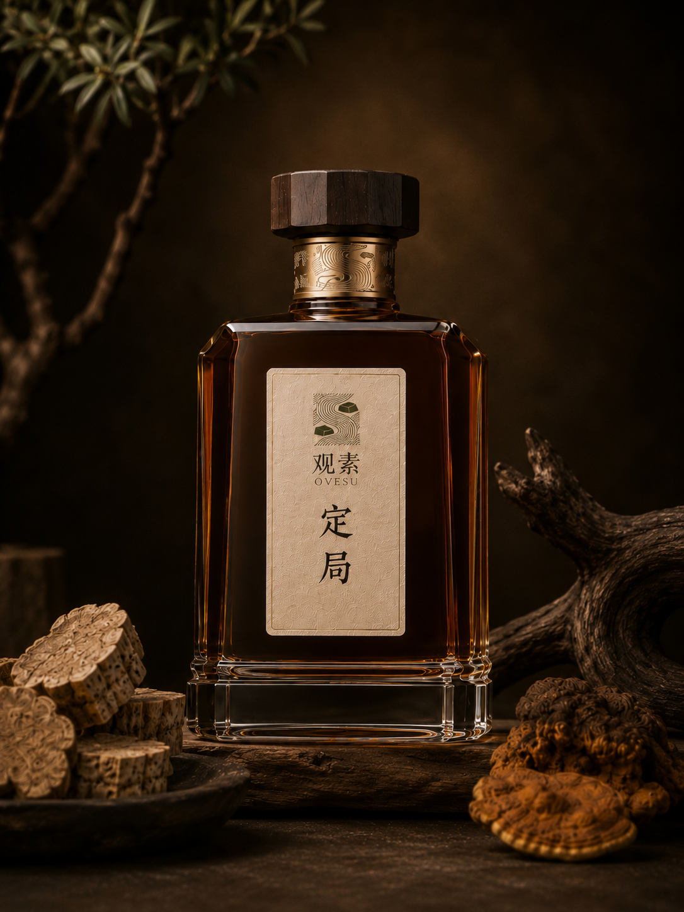
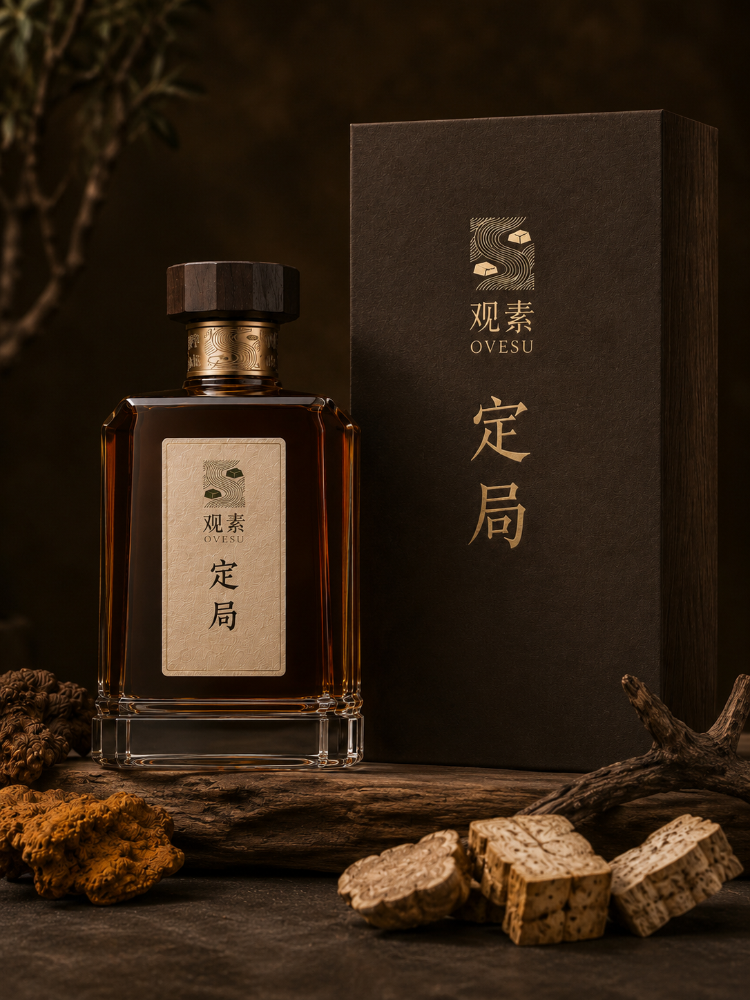
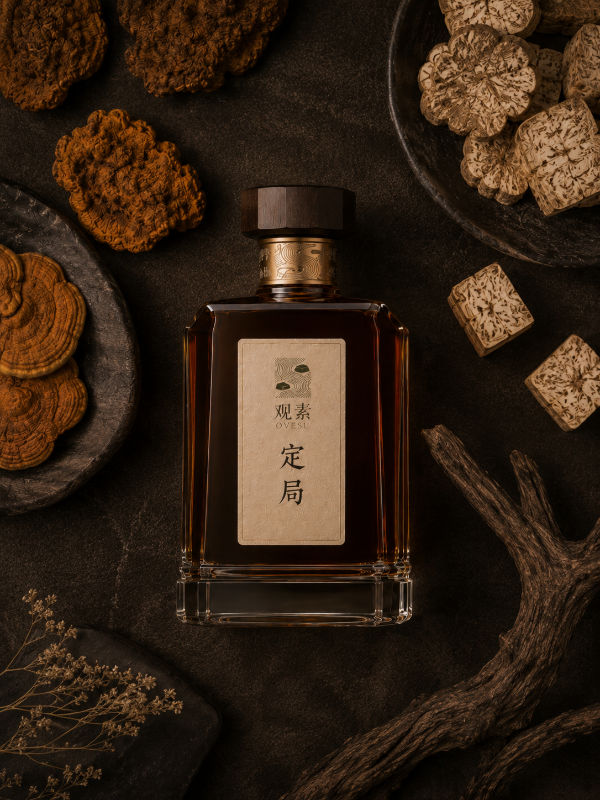
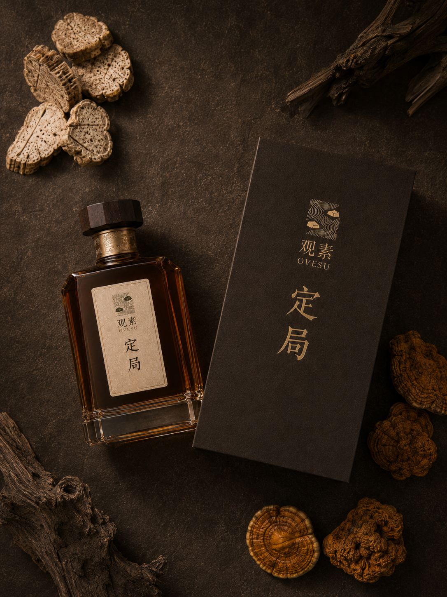
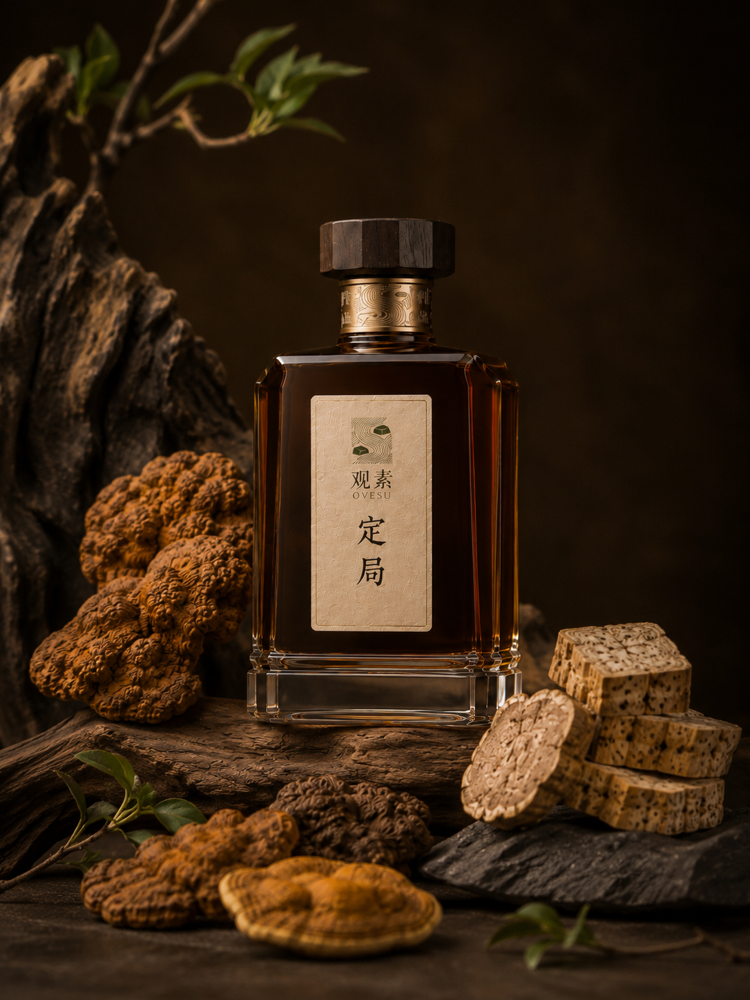
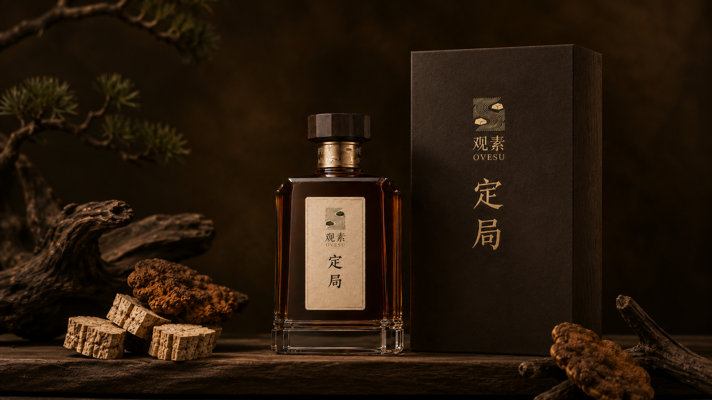
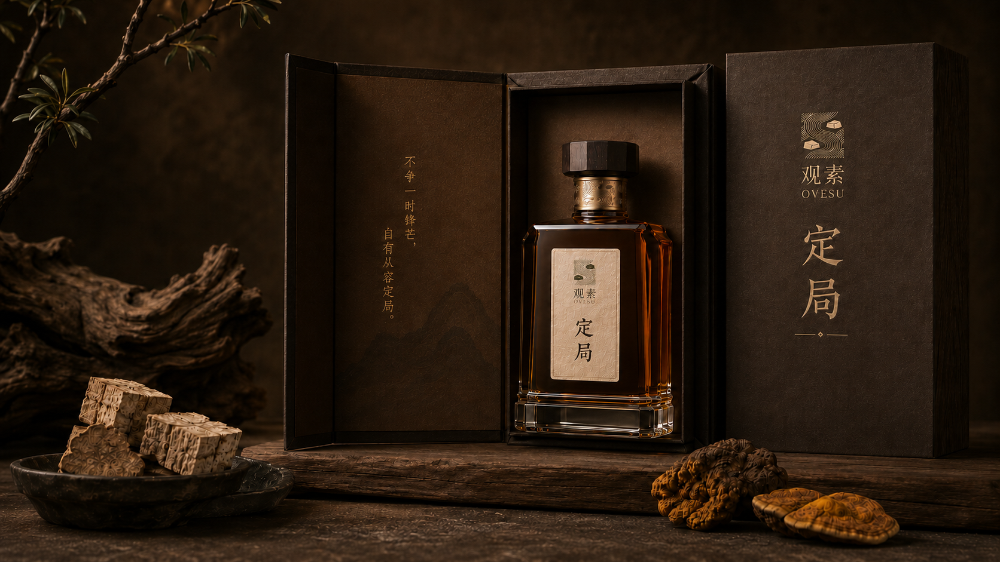

桑黄葛根酒
定局
宴席之间，自有分寸；杯盏起落，不必失了体面。
定局不是传统商务酒的重复。桑黄与葛根提供沉静草本底色， 纯粮白酒保留酒体骨架，让它适合上桌、待客、谈事与送礼。
风味层次前调干净利落，纯粮白酒的骨架撑起凌厉感；中段木质与菌香缓缓铺开，尾段圆融而不乱。
草本初衷桑黄奠定深静的底色，葛根的柔和将高度酒的直线感微微拉开，形成宴席中恰到好处的草本分寸感。
情绪场景重要的商务会面与正式宴席。不怯场，不失态，在必须端起酒杯的时刻，给予身体一份不动声色的隐秘庇护。
核心草木桑黄 / 葛根
草木寻迹长白山深林 / 大别山野
酒体视觉深琥珀色，沉厚内敛
岁月沉淀菌木同窖，恒温封藏
酒精度42% - 52% Vol.
适用器皿白玉小酒盏 / 极简水晶烈酒杯

